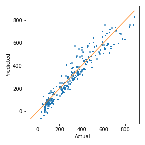
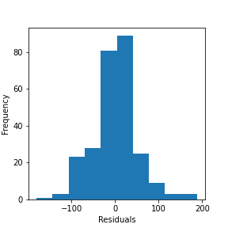
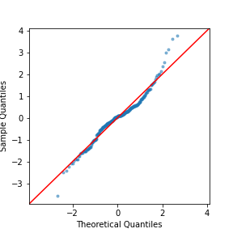
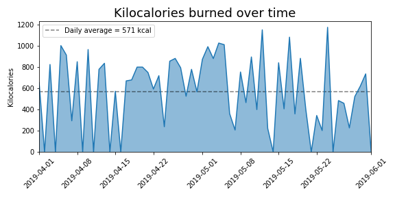
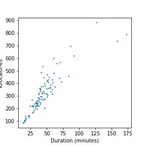
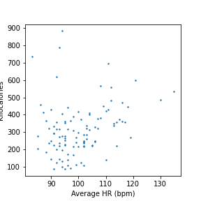
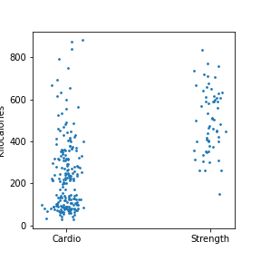

Statistical Modeling of Workout Vitals with Mixed Linear Models (MixedLM)
Analyzing real wearable telemetry from a Polar Vantage fitness watch across 283 workouts. Demonstrates how random intercept and random slope mixed models account for repeated intra-subject variance across distinct sports categories (strength, endurance, walking), reducing prediction RMSE from 79.4 to 61.2 kcal.
Biometric Workout Calorie Simulator
Estimate total calorie expenditure and cardiovascular strain using empirical mixed-effects regression coefficients.
Circadian Training Distribution
Total workouts logged across 24-hour day schedule
Weekly Training Frequency
Volume across days of the week
Mixed Linear Model Regression Diagnostics
Formal statistical parameters from restricted maximum likelihood (REML) fitting
| Parameter | Coef (β) | Std.Err | z-value | P > |z| | [95% CI] |
|---|---|---|---|---|---|
| Intercept | -494.503 | 30.652 | -16.133 | < 0.001 | [-554.6, -434.4] |
| Total Time (min) | +6.432 | 0.495 | +12.989 | < 0.001 | [+5.461, +7.403] |
| Heart Rate Q99 | +4.282 | 0.256 | +16.743 | < 0.001 | [+3.781, +4.783] |
| Sport Random Variance | 2.810 | 2.550 | -- | -- | REML Estimated |
Variance Inflation Factor (VIF) analysis revealed extreme multicollinearity between mean HR and quantile HR features (VIF > 20). Eliminating redundant features and retaining only 99th percentile HR resolved inflation, yielding stable estimator variance.
Telemetry & Residuals Gallery
Full diagnostic plots extracted from statistical evaluation notebooks








Sample Polar Telemetry Sessions
Recorded sessions with predicted calories, empirical calories, and error delta
| Sport | Duration (min) | Avg HR | Peak HR (Q99) | Actual (kcal) | Mixed Model (kcal) | Delta | Accuracy |
|---|